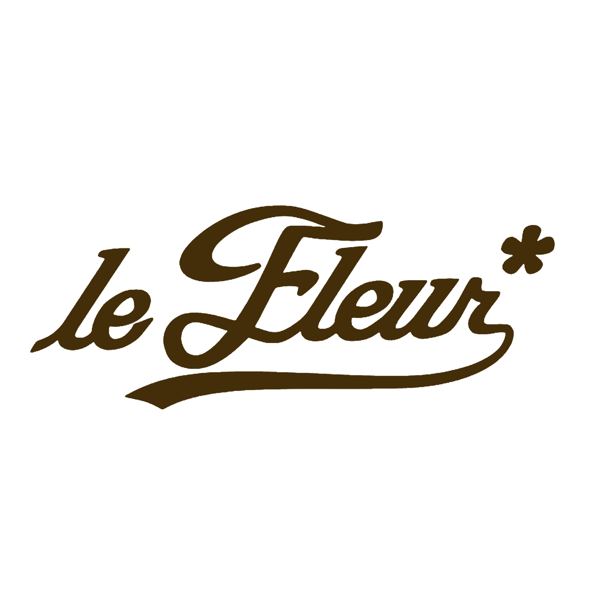
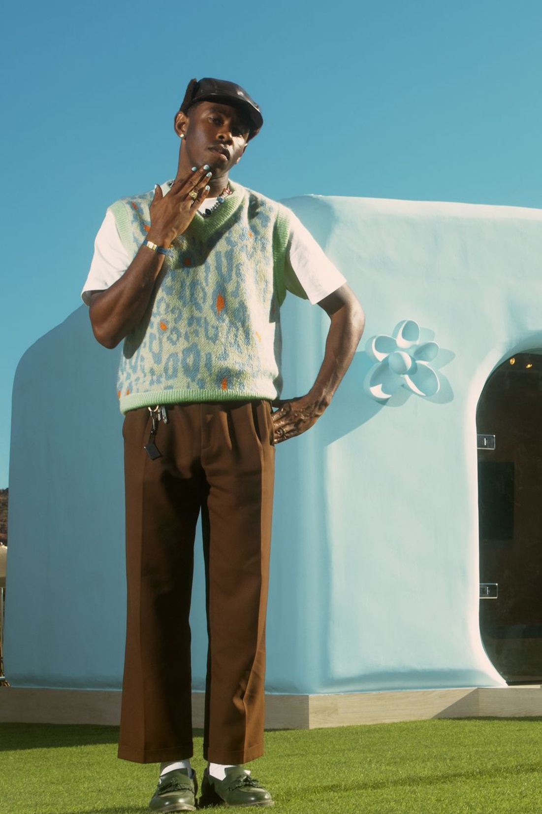
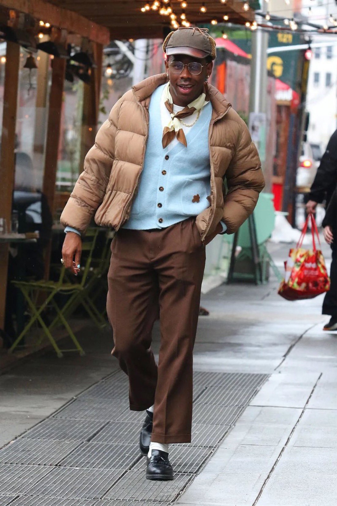
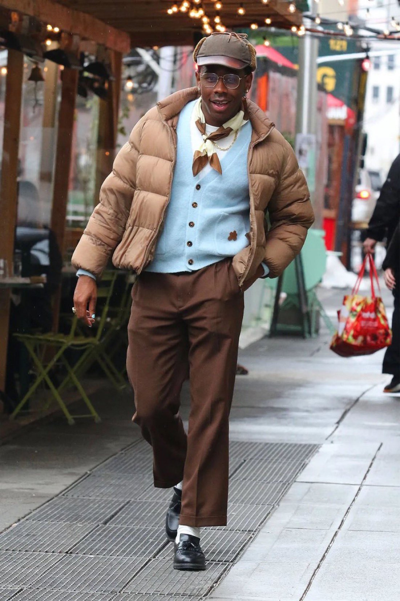
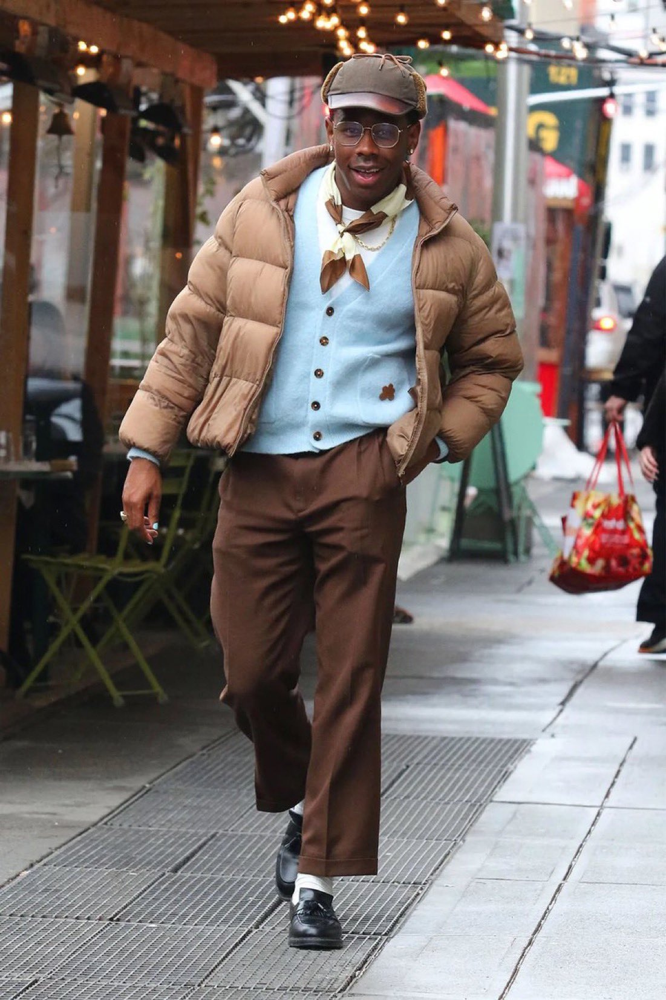

Hallgasd Meg Itt


Tracklist
- Sir Baudelaire feat. DJ Drama
- Corso
- Lemonhead feat. 42 Dugg
- Wusyaname feat. YoungBoy Never Broke Again & Ty Dolla $ign
- Lumberjack
- Hot Wind Blows feat. Lil Wayne
- Massa
- Runitup feat. Teezo Touchdown
- Manifesto feat. Domo Genesis
- Sweet / I Thought You Wanted to Dance feat. Brent Faiyaz & Fana Hues
- Momma Talk
- Rise! feat. Daisy World
- Blessed
- Juggernaut feat. Lil Uzi Vert & Pharrell Williams
- Wilshire
- Safari

A "Le FLEUR" kifejezés Tyler, the Creator divatmárkájának, a Golf le FLEUR*-nek a neve, amely a Call Me If You Get Lost albumon is megjelenik.
Itt van pár kép ami bemutatja a stílust.

 

